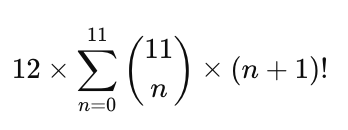

Harken Music is a new, first-ever mathematical solution for calculating all 1,193,556,233 harmonic combinations and permutations possible in 12-tone music.
Please read the step-by-step description of the math below, and then use the open-source HTML/JavaScript demo at harkenmusic.com to see and hear everything yourself.
Note: A desktop or laptop computer and current web browser (Chrome, Safari, etc.) are required for using the demo; however, there are no downloads, sign-up, or subscription requirements.
Using the demo, you can choose any combination size (from 1 to 12 notes) from the pulldown menu; then select a combination from the numbered list to see and hear all permutations, reflections (inversions), and rotations (transpositions).
There are 2,048 possible combinations (n) for each of the 12 potential tonic notes.
In this system, the tonic [0] is fixed and required in every combination—thus we use the binomial coefficient “11 choose n for n = 1 to 11” to calculate the following:
The sum of these results is 2,048, and because any of 12 notes can be used for the fixed tonic [0], the total of all possible unique harmonic combinations is 24,576 (2,048 x 12).
When order is considered, the total expands to include 1,193,556,233 possible permutations of 24,576 combinations. Using factorials (n!), we calculate the total number of permutations possible for each combination size as follows:
Thus the grand sum of all possible unique harmonic combinations and permutations is: 1,193,556,233. The formulas above may be expressed as follows.
This is a duodecimal or base-12 system that uses the following sequence of 12 unique numbers to identify the notes or pitches in a given combination: [0, 1, 2, 3, 4, 5, 6, 7, 8, 9, 10, 11]
Any musical pitch may be used for the fixed tonic [0]; and thus every note that follows will be heard relative to the tonic, producing the following intervals.
This system uses two simple formulas to calculate ascending and descending cycles: (n * 7) % 12 for n = 0 to 11 produces the ascending cycle [0, 7, 2, 9, 4, 11, 6, 1, 8, 3, 10, 5], while (n * 5) % 12 for n = 0 to 11 produces the descending cycle [0, 5, 10, 3, 8, 1, 6, 11, 4, 9, 2, 7].
(n * 7) % 12 (for n = 0 to 11) = [0, 7, 2, 9, 4, 11, 6, 1, 8, 3, 10, 5]
(n * 5) % 12 (for n = 0 to 11) = [0, 5, 10, 3, 8, 1, 6, 11, 4, 9, 2, 7]
The cycle order is bi-directional, so ascending and descending cycles may be combined: where the tonic [0] is located in the middle of the sequence, with the tritone [6] at each end.
[6, 1, 8, 3, 10, 5, 0, 7, 2, 9, 4, 11, 6]
The tritone interval [6] appears twice to preserve left-right symmetry, but is only counted once, so the cycle order remains entirely within base-12.